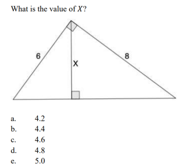
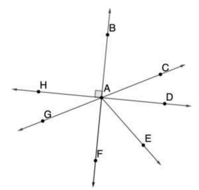
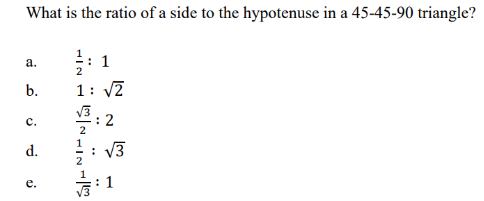
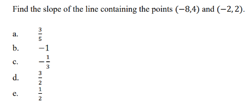
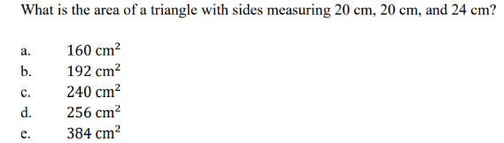
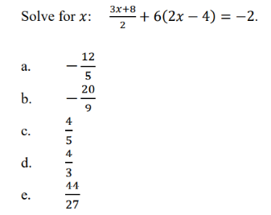
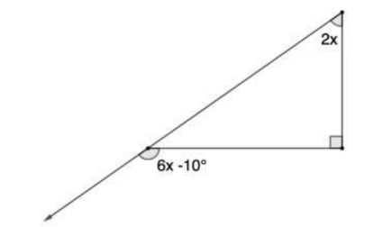

United States Academic Pentathlon
1. Music theory traditionally describes pieces of music as if they were what?
a. thoughts
b. ideas
c. fixed objects
d. colors
e. tones and instruments working together
2. _______ means, literally, repeating musical material, using the identical pitches, rhythms, and harmonies, or at least a very close approximation.
a. Grind
b. Symmetry
c. Tone
d. Tonic
e. Repetition
3. Which of the following is one of the best-known early electronic instruments and is still occasionally used today?
a. timer
b. theremin
c. copier
d. repeater
e. linker
4. The amplitude affects the ______ level, or how loud or soft the tone is.
a. wave
b. decibel
c. frequency
d. phrase
e. cadence
5. In most of the music written nowadays, we customarily use only two modes, which are
a. major and minor
b. black and white
c. large and small
d. vertical and horizontals
e. complete and incomplete
6. The strict definition of a line is
a. the path of a point moving through space
b. the movement of light
c. the moving force through an object
d. changing how people perceive the world
e. the movement of water
7. The Renaissance in Europe is associated with the _______ of classical ideas.
a. re-birth
b. abolishment
c. creation
d. destruction
e. saving
8. Romantic artists found what topics especially fascinating?*
a. supernatural
b. historic
c. scientific
d. architectural
e. religious
9. What is a formal synonym for round?
a. square
b. canon
c. total
d. mine
e. edge
10. The Starry Night is the most famous painting by
a. Leonardo Da Vinci
b. Samuel Dylan
c. Theodore Gericault
d. Vincent van Gogh
e. Tom Rakewell
11. What are the basic units of life?
a. nerves
b. blocks
c. brains
d. cells
e. holds
12. What test is used to identify cancerous colon lesions early?
a. colon x-ray
b. fecal occult blood
c. bone marrow
d. retinal scan
e. chemotherapy
13. Which of the following describes abnormal cells that divide in an uncontrolled manner?
a. toxic
b. cancer
c. dopamine
d. gluten
e. hyperplasia
14. Tobacco products do not have to be smoked to be what type of a risk?
a. inherited
b. nuclear
c. mystical
d. cancer
e. imaginary
15. Human DNA is made up of two strands and one can conclude that what percentage of your DNA comes
a. 25% father, 75% mother
b. 25% mother, 75% father
c. 50% mother, 50% father
d. The percentage is random.
e. 40% mother, 40% father, 20% random
16. Within a cell nucleus, the DNA is carefully packaged via proteins known as what?
a. histones
b. amino acids
c. expression proteins
d. ribosomes
e. plasma
17. What are made up of rRNA and proteins and are found in the cytoplasm?
a. histones
b. ribosomes
c. dimosomes
d. nucleus
e. guanine
18. What term literally means little organ?
a. brain
b. cilia
c. organelle
d. mitochondria
e. cytosine
19. What organelles carry out the digestion of materials that need to be broken down?
a. mitochondria
b. lysosomes
c. proteins
d. chained carbonic acids
e. peroxisomes
20. The last phase of mitosis is known as
a. chlorophase
b. helophase
c. tetraphase
d. telophase
e. prophase
21. When did human settlements and land cultivation start to be more common?
a. before the Second Ice Age
b. the Neolithic (final part of the “Stone Age”) era
c. the “Middle Bronze Age”
d. the Zoonithic era
e. after the “Middle Bronze Age”
22. During the Middle Ages, what language served to unify and stabilize a vast region stretching from the eastern Mediterranean and north Africa to Arabia?
a. Arabic
b. Urdu
c. Latin
d. Italian
e. Portuguese
23. What took place between the late medieval period and the early modern?
a. the Middle Ages
b. the European Renaissance
c. the Extra War Period
d. the Era of Latin Discontent
e. the Era of Good Feelings
24. Da Vinci wrote: “The earth is a world machine,” with water “the _________________”
a. most prized liquid
b. lubricant of choice
c. best liquor
d. oil
e. vital humour
25. According to Plato, how is the three-part system of the human soul ordered in a hierarchy?
a. desire (appetite) in the head, spirit (emotion) in the chest, reason (intellect) in the gut
b. desire (appetite) in the head, reason (intellect) in the chest, spirit (passion) in the loins
c. reason (intellect) in the head, desire (appetite) in the chest, spirit (passion) in the loins
d. spirit (emotion) in the head, reason (intellect) in the chest, desire (appetite) in the gut
e. reason (intellect) in the head, spirit (emotion) in the chest, desire (appetite) in the gut
26. Which German physicist discovered the X-ray?
a. Robert Koch
b. Samuel Hahnemann
c. Anton Mesmer
d. Rudolf Virchow
e. Wilhelm Roentgen
27. If explorers found ancient writings about medicine on clay tablets dated to 1750 BCE or earlier, where in the world would they likely come from?
a. Egypt
b. Wright Valley
c. Peru
d. India
e. Mesopotamia
28. In Mesopotamian writings, what subject would likely be a professional interest to American herbalist Samuel Thomas?
a. Magical rituals
b. Incantations
c. Plant-based pharmacology
d. Metallurgy
e. Clay baking
29. How many of the 1721 Boston smallpox outbreak victims did NOT survive?
a. 1 in 20
b. 1 in 8
c. 1 in 4
d. 1 in 3
e. 1 in 2
30. Germ theory states that
a. some diseases come from microorganisms that infect the body
b. putrid air is responsible for how diseases like the plague spread
c. the body’s immune system is powerless to combat viruses
d. only antibiotics can kill viruses
e. bacteria do not cause death because they act to preserve the life of the host
31. Which of the following was inspired by a remark made by Mark Twain?
a. The Great Gatsby
b. The Masque of the Red Death
c. Fever 1793
d. The Curious Case of Benjamin Button
e. The Last Hours
32. The Great Gatsby is often cited as this author’s most famous work.
a. Francis Herring
b. Giovanni Boccaccio
c. John Donne
d. Edgar Allan Poe
e. F. Scott Fitzgerald
33. Emily Dickinson spent most of her life
a. traveling
b. indoors
c. in a hospital
d. outdoors
e. in bed
34. The genre of The Curious Case of Benjamin Button is
a. horror
b. mystery
c. fantasy
d. comedy
e. drama
35. A literary device in the form of a poem, quotation, or sentence is known as
a. epithet
b. simile
c. haiku
d. epigraph
e. proverb
36. Which of the following started in Central Asia, striking China, India, Persia, Syria and Egypt in the early 1340s as a major epidemic of the bubonic plague?
a. Tuberculosis
b. Typhoid Fever
c. Malaria
d. Yellow Fever
e. Black Death
37. Which of the following formed the Free African Society in 1787?
a. Robert Morris
b. Absalom Jones
c. Benjamin Rush
d. Richard Allen
e. Tench Coxe
38. Most of Emily Dickinson’s writing took place in the form of letters, or
a. expository writing
b. narrative writing
c. descriptive writing
d. persuasive writing
e. epistolary writing
39. The genre of The Curious Case of Benjamin Button is
a. horror
b. mystery
c. fantasy
d. comedy
e. drama
40. Laurie Halse Anderson began her career as a(n)
a. technical writer
b. book illustrator
c. freelance writer
d. news anchor
e. English teacher
41. What is the value of x? 
a. 15°
b. 18°
c. 20°
d 24°
e. 25°
42. What angle is complementary to ∠BAC? 
a. ∠CAE
b. ∠EAF
c. ∠GAH
d. ∠GAF
e. ∠CAB
43. A 98° angle and an 82° angle are
a. congruent angles
b. obtuse angles
c. complementary angles
d. supplementary angles
e. vertical angles
44. What principal angle is coterminal with -45°?
a. -225°
b. -180°
c. 45°
d. 135°
e. 315°
45. 
a
b
c
d
e
46. 
a
b
c
d
e
47. 
a
b
c
d
e
48. 
a
b
c
d
e
49. 
a
b
c
d
e
50. Solve the inequality: 2 < 20 - 2𝑥 ≤ 10
a. 4 < 𝑥 ≤ 10
b. 7 ≤ 𝑥 < 11
c. 8 ≤ 𝑥 < 12
d. 6 < 𝑥 ≤ 8
e. 5 ≤ 𝑥 < 9
Submit
Are you sure you want to submit?
Yes
No